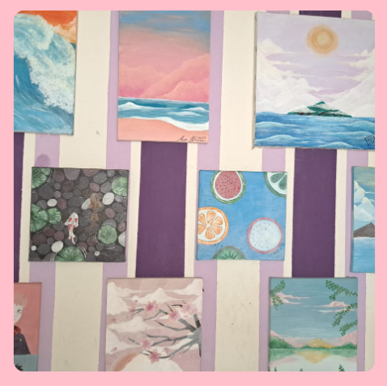
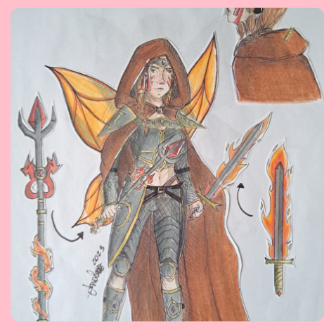

Hobbys
Sempre gostei muito de pintar e desenhar, além de ser uma leitora de antiguidades.
Gosto muito de animações e fantasia, passando muito tempo ddesenhando mundos novos e criando personagens.


Alguns de meus quadros;
Uma personagem criada por mim;